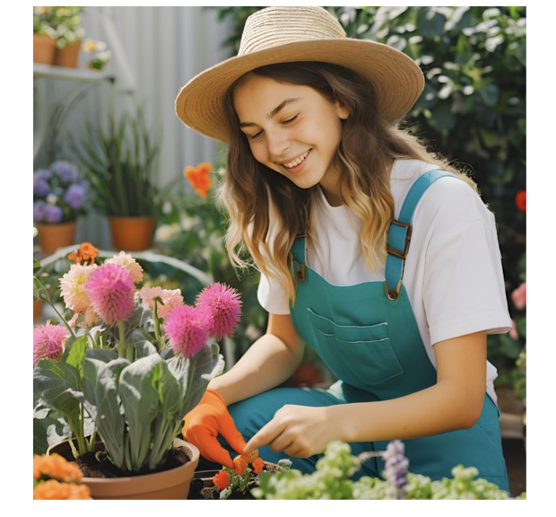

Gardening is a relaxing and rewarding hobby that allows you to connect with nature. Whether you have a small balcony or a large backyard, you can grow your own plants and flowers.
Some tips for beginners:
Learn more about gardening at Gardener's Supply Company.